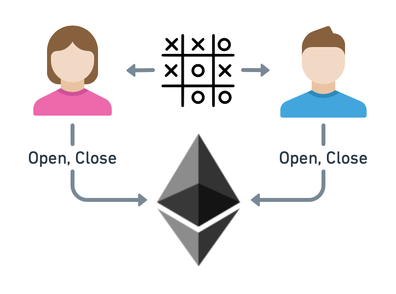

Introduction
Usually, decentralized applications (dApps) are deployed as smart contracts, e.g., on the Ethereum blockchain. On-chain interaction with these can be pretty expensive. Even more costly than simple payment transactions because app-associated data is required. But their use case is vast because dApps define application-specific state transformations and win conditions that protect against fraudulent behavior (if the dApp is implemented correctly, of course).
In this tutorial, we want to share a blueprint of using go-perun, similar to the payment channels, for so-called “app channels” to perform interactions with a Tic-Tac-Toe dApp efficiently off-chain. Alice and Bob have an on-chain connection to an Ethereum blockchain and a direct link to each other for operating their app channel. They decided to play Tic-Tac-Toe for a certain amount of money. The parties can make alternating moves until one party wins. The winning party is rewarded with the funds the opposite party put into the app channel.
{kind=link}
Tip
These app channels are more advanced than the payment channel example but build on many of the same concepts. Therefore, it is recommended to take a look at the payment channel example before continuing as we reuse a lot of code & logic.
Dependencies
The dependencies remain unchanged from the payment channel tutorial. Have a look at the description there if you did not already do so. Additionally, a basic knowledge of Solidity will be helpful for parts of this tutorial. This tutorial’s source code is available at perun-examples/app-channel.
# Download repository.
git clone https://github.com/perun-network/perun-examples.git
cd perun-examples/app-channel
Attention
We use context.TODO() and panic(err) throughout the tutorial to keep the code simple. In production code, one should always initialize the context and handle errors properly.